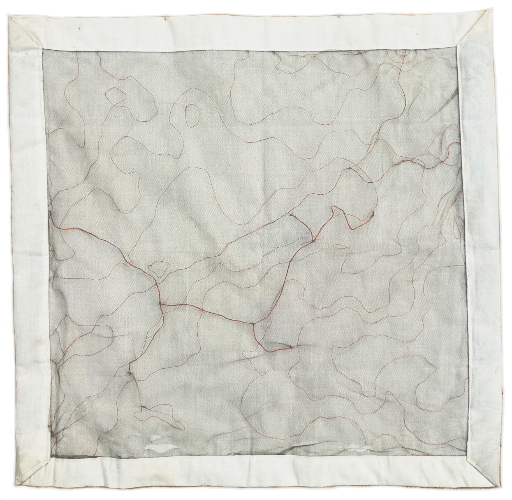
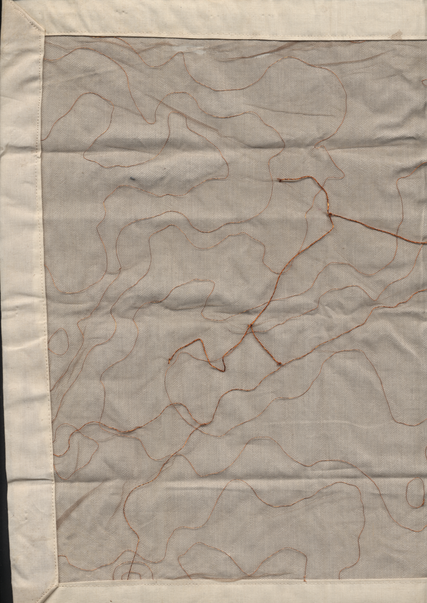

this is a map of Kpalimé in Togo's Plateaux region, 2024.

here copper wire of 2 thicknesses is threaded carefully into nylon tulle and then layered over cotton muslin.
the buffer space between the lines and their resting frame suggests that the territory depicted is detached from its surrounds, existing in more of a dream state than a physical reality.


